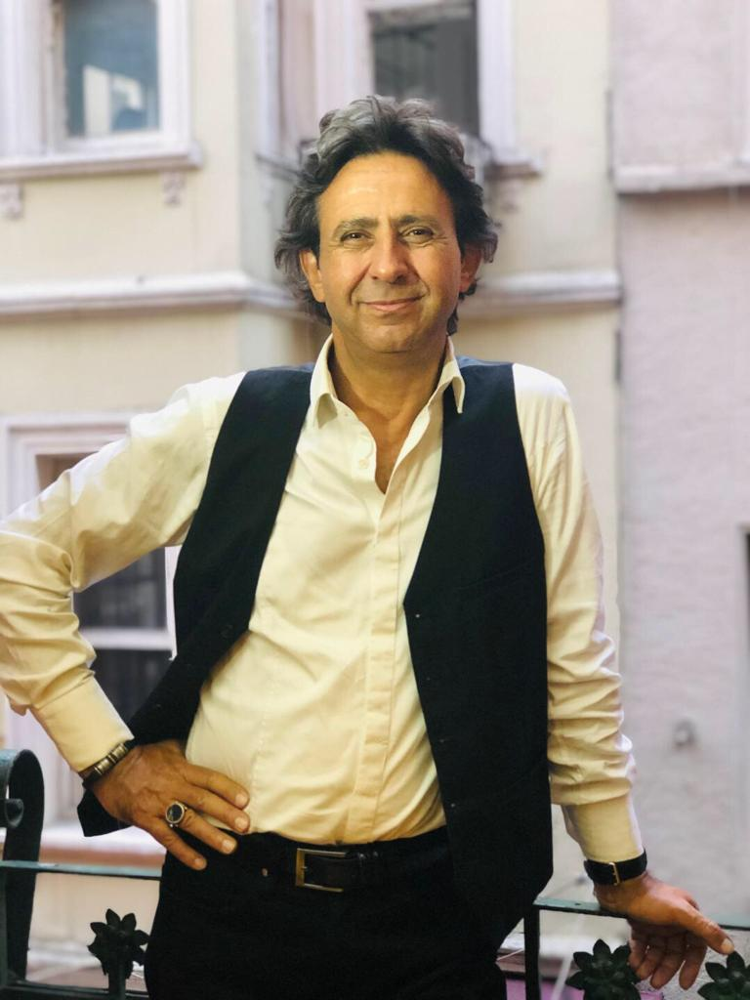

Mehmet Özkaya
Anasayfa |
İletişim |
Hakkımda |
Özgeçmiş

Müzisyen, besteci, ses sanatçısı, müzik eğitmeni. Türk Sanat Müziği ile ilgili çalışmalarına Ankara Türk Müziği Derneğinde başladı. Doğan Koçer, Yılmaz Pakalınlar, Feruzan Esmergül, Ferit Sıdal, Ahmet Hatipoğlu, ve Metin Everes’ten nota, solfej, şan ve repertuar dersleri aldı. 1990 yılında açılan sınavla TRT'ye girdi. Çankaya Üniversitesinde Türk Sanat Müziği Korosu oluşturdu. Aynı Üniversite’de öğretim görevlisi olarak Klasik Türk Musikisi uygulamaları ve ses eğitimi dersleri verdi.
TRT Ankara Radyo’sunda 10 yıl görev aldıktan sonra İstanbul Radyosuna geçiş yaptı. TRT Müzik kanalında “Laciver” adlı programı hazırlayıp sundu. 2005- 20013 yılları arasında TRT İstanbul Radyosunda Türk Sanat Müziği çocuk ve gençlik koroları eğitmenliği yaptı.
Radyodaki çalışmalarının yanı sıra Boğaziçi Üniversitesi, Halk Bankası, Kadıköy Belediyesi Fenerbahçe Mahallesi Gönüllüleri ve “Mehmet Özkaya Türk Müziği Topluluğu" korolarını çalıştırmaktadır. TRT Repertuarında ve Mesam’da kayıtlı 35 bestesi bulunmaktadır.
Türk Müziğine çağdaş bir yorum getirme amacında olan sanatçı, İTÜ’de verdiği konser kayıtlarından oluşan “Senfonik Türk Sanat Müziği Konseri” albümü ile, Avrupa Gazeteciler Derneği’nin 2010 yılı en iyi Türk Sanat Müziği Sanatçısı ve 2011 tarihinde Azerbaycan’ın başkenti Bakü’de “3. The First” ödüllerini almıştır.
“Çağdaş Müzik Orkestrası Konseri” adlı 2. Konser albümü ile Türk Müziği’ne çağdaş bir yorum getiren Mehmet Öözkaya'nın, kendi bestelerinden oluşan 3. albümü "Aşk Mevsimi" 2016 yılında yayımlanmıştır. Halen TRT İstanbul Radyosu'nda solist sanatçı ve Türk Sanat Müziği Çocuk Korosu şefi olarak görev yapmaktadır. Evli bir kız çocuk babasıdır.